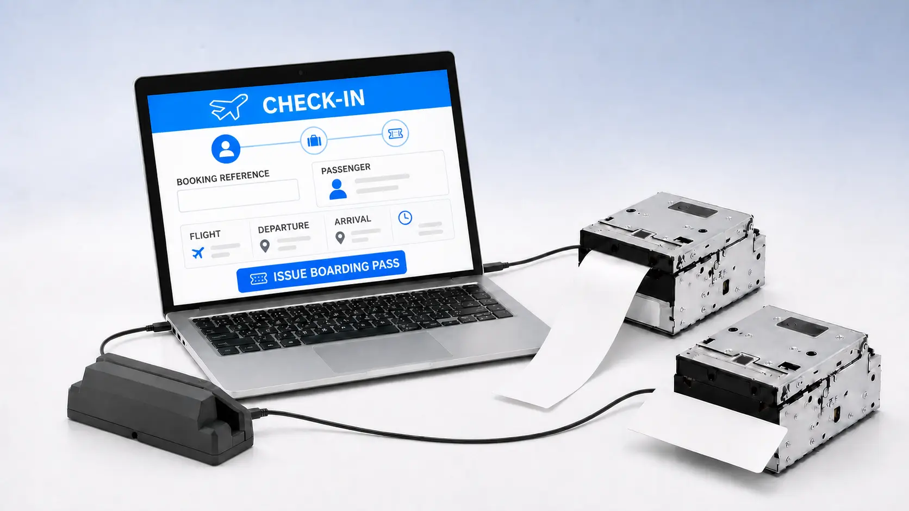

ハードウェア
PC、モニター、搭乗券・手荷物タグプリンター、搭乗券リーダー、OCR/MSRなどを選定・調達し、使用できる状態まで整えます。
空港の運用とITをつなぐ、現場起点のソリューション
チェックイン端末、プリンター、リーダー等のハードウェアから、航空会社DCS・アプリケーションの設定、ネットワーク、設置・接続試験、導入後の運用サポートまでを一貫して提供します。

CUTEやCUPPSなど特定の方式だけを提供するのではなく、空港の規模、就航航空会社、既存設備、実際の運用に合わせて、共用チェックイン環境全体を設計します。
PC、モニター、搭乗券・手荷物タグプリンター、搭乗券リーダー、OCR/MSRなどを選定・調達し、使用できる状態まで整えます。
航空会社DCS・チェックインアプリケーションと各種機器を接続し、業界標準と現場運用に適した環境を構築します。
国内外の航空会社IT部門との調整、接続試験、切替、操作支援、リモート保守、障害対応まで継続して支援します。
既存設備を生かした移行、地方空港や国際線チャーター便に適したコンパクトな構成にも対応します。
詳しく見る主業務である共用チェックイン環境の提供に加え、CUSSプラットフォームをはじめ、空港の旅客処理・案内・運用を支えるソフトウェアを自社開発しています。
企画・設計・開発を自社で行うため、現場のご要望や運用変更に合わせた機能改修、改善、追加開発へタイムリーに対応できます。

自社開発でCUSS 1.5環境の安定運用を支えながら、お客様に最適なタイミングでCUSS 2への段階的な移行を支援します。
詳しく見る



業界特殊機器をお客様が個別に調査・調達する必要はありません。一般OA機器から業務用プリンター、バーコードリーダー等まで、用途と接続条件を確認したうえで選定・販売し、使える状態まで整えます。
不要な外部依存や複雑な構成を避け、現場で理解しやすい仕組みにします。
設定の外部化、明確なログ、引き継ぎやすい構成を開発の標準とします。
障害時に現場で判断しやすく、短時間で通常運用へ戻せることを重視します。
既存業務の課題整理、製品の検証、導入・運用方法など、構想段階からご相談いただけます。